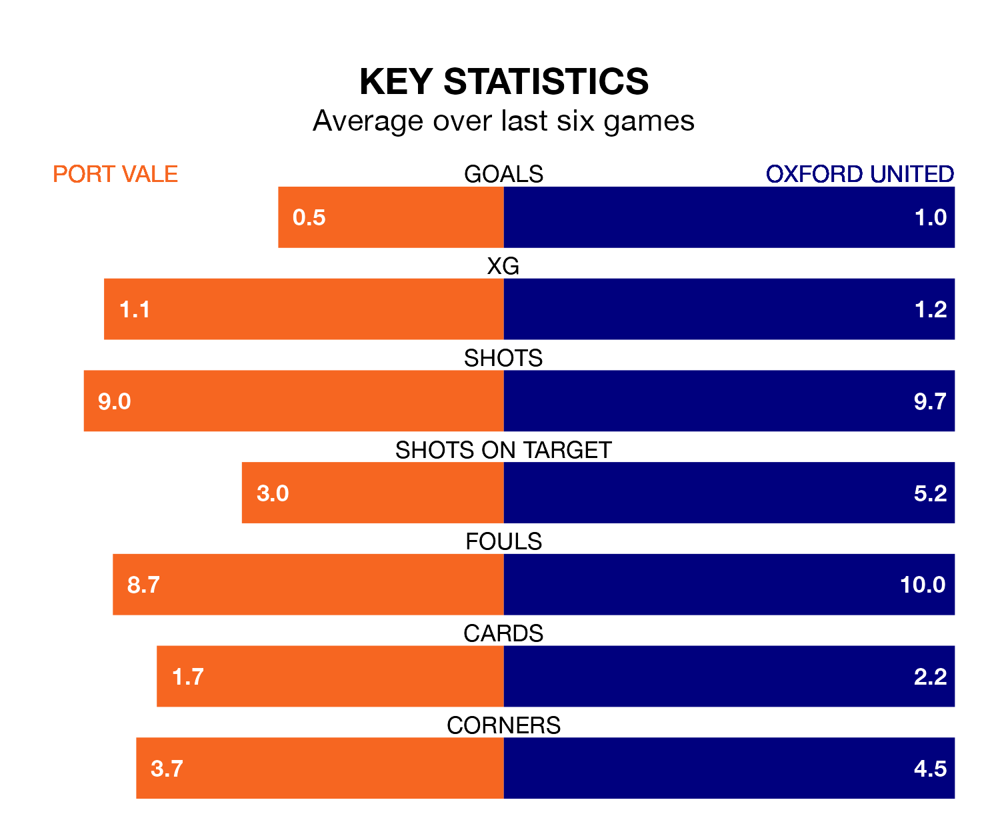

Port Vale are on a terrible run ahead of hosting Oxford United at Vale Park on Saturday, with just two points collected from their last six games.
The Valiants have picked up two draws and four losses in their last six EFL League One games, and face an Us side whose last six games have brought one win and two draws.
Vale are 23rd in the table after 36 games, of which they have won eight and drawn nine, earning 33 points.
Oxford are 15 places ahead of the Valiants in eighth, with 17 wins and nine draws putting them on 60 points.
With 35 goals in 36 games so far this season, the home side are scoring at below the league average rate with 1.0 goals per game. And they are conceding more than average, letting in 59 goals at a rate of 1.6 per game.
United, meanwhile, are above average scorers, with 1.6 goals per game, compared to a league average of 1.3. They have conceded 1.4 goals per game.
In the last 10 years, Vale and Oxford have played each other on six occasions. They won two each, and they drew twice.
On average, the Valiants scored 1.0 goal and the Us 1.5 in those matches.
Their last meeting was on September 2, when Vale won 2-1 away.
Vale's last match was on Tuesday, a 0-0 draw against Leyton Orient.
Oxford lost 5-0 against Bolton Wanderers last time out, also on Tuesday.
Saturday's match will be refereed by Jeremy Simpson, who has taken charge of six EFL League One games so far this season, issuing two red cards and booking 37 players. He has awarded one penalty.
The last Oxford game Simpson refereed was the 4-2 win at home against Wigan Athletic on February 13. He is yet to oversee a match featuring Vale this season.
Updated: 15:10 (UTC), 15/03/24